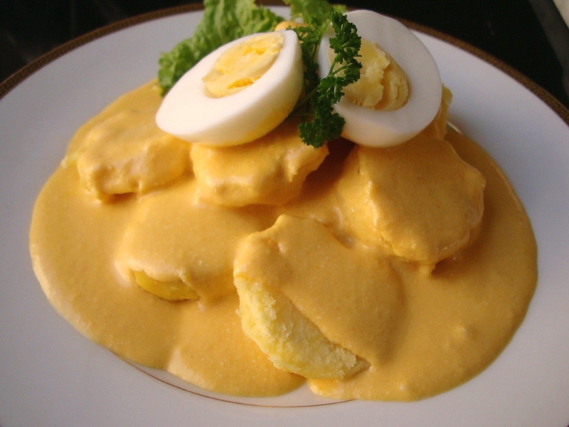

Papa a la Huancaina

Description:
Papa a la Huancaina is a delicious Peruvian dish that mainly consists of potatoes, boiled eggs, and a delicious sauce to top it off
and bring the dish together. This dish is pretty significant to me as my mom, who is from Peru, has made this many times for us
and just always brings me back to my childhood. This dish would definitely pair great with some kind of protein on the side as well.
Ingredients:
- Aji Amarillo Paste
- Vegetable Oil
- Evaporated Milk
- Crackers
- Queso Fresco
- Salt
- Iceberg Lettuce
- Yellow Potatoes
- Hard-boiled Eggs
- Parsley
Steps:
- Combine the aji amarillo paste, oil, milk, crackers, queso fresco, and salt in the blender until it is complete.
- Slice up the yellow potatoes into circular slices, lay it out on the table, then pour the sauce all over until it is reasonably covered.
- Now, cut up your hard-boiled eggs in half or in slices, place on top along with some parsley and it is complete